◆「New Year2017Pick Up召喚」期間◆
期間：2016年12月31日(六) 23:00～1月11日(三) 13:591月15日(日) 22:59
※延長舉辦期間。
以期間限定舉辦「New Year2017Pick Up召喚」！
初登場的Servant「★5(SSR)宮本武藏」以期間限定登場！
另外這次是包含上述，對象8位的★5(SSR)Servant以每日交替Pick Up！
對象的★5(SSR)Servant「★5(SSR)吉爾伽美什(Archer)」「★5(SSR)兩儀式(Saber)」「★5(SSR)伊斯坎達爾」「★5(SSR)伊莉雅絲菲爾」「★5(SSR)坂田金時(Berserker)」「★5(SSR)斯卡哈(Lancer)」「★5(SSR)伊絲塔」的出現機率提升！
詳情請在聖晶石召喚畫面左下的召喚詳細確認。
※宮本武藏、吉爾伽美什(Archer)、兩儀式(Saber)、伊斯坎達爾、伊莉雅絲菲爾、坂田金時(Berserker)、斯卡哈(Lancer)、伊絲塔在Pick Up期間結束後，不會追加到故事召喚。
還有，與“新年”有關的概念禮裝「★5(SSR)ファースト・サンライズ」「★4(SR)射初の一矢」「★3(R)カッコーの巣の上で」也以期間限定登場！
另外 在「★5(SSR)兩儀式(Saber)」的Pick Up日「空之境界合作Pick Up召喚」限定概念禮裝、在「★5(SSR)伊莉雅絲菲爾」的Pick Up日「魔法少女紀行 ～プリズマ・コーズ～Pick Up召喚」限定概念禮裝，各自以每日交替Pick Up！
還有，在最終日的1月11日(三)2016年的「New Year Pick Up召喚」限定概念禮裝會Pick Up！
※★3(R)概念禮裝在各自的Pick Up期間中，也能靠友情點數召喚獲得。
Pick Up期間中，期間限定Servant、期間限定概念禮裝的出現機率提升！
10次召喚中確定1張★4(SR)以上和確定1位★3(R)以上的Servant！
※確定★4(SR)以上包含Servant和概念禮裝。
※所謂「出現機率提升」意指比同稀有度的Servant及概念禮裝出現機率更高的設定。
| Pick Up期間 | Pick Up内容 |
|---|---|
| 12月31日(六) 23:00～1月2日(一) 22:59 | 宮本武藏、「New Year2017Pick Up召喚」限定概念禮裝 |
| 1月2日(一) 23:00～1月3日(二) 22:59 | 吉爾伽美什(Archer)、「New Year 2017Pick Up召喚」限定概念禮裝 |
| 1月3日(二) 23:00～1月4日(三) 22:59 | 兩儀式(Saber)、「空之境界合作Pick Up召喚」限定概念禮裝 |
| 1月4日(三) 23:00～1月5日(四) 22:59 | 伊斯坎達爾、「New Year2017Pick Up召喚」限定概念禮裝 |
| 1月5日(四) 23:00～1月6日(五) 22:59 | 伊莉雅絲菲爾、「魔法少女紀行 ～プリズマ・コーズ～Pick Up召喚」限定概念禮裝 |
| 1月6日(五) 23:00～1月7日(六) 22:59 | 坂田金時(Berserker)、「New Year2017Pick Up召喚」限定概念禮裝 |
| 1月7日(六) 23:00～1月8日(日) 22:59 | 斯卡哈(Lancer)、「New Year2017Pick Up召喚」限定概念禮裝 |
| 1月8日(日) 23:00～1月9日(一) 22:59 | 伊絲塔、「New Year2017Pick Up召喚」限定概念禮裝 |
| 1月9日(一) 23:00～1月10日(二) 22:59 | 宮本武藏、「New Year2017Pick Up召喚」限定概念禮裝 |
| 1月10日(二) 23:00～1月11日(三) 13:59 | 宮本武藏、吉爾伽美什(Archer)、兩儀式(Saber)、伊斯坎達爾、伊莉雅絲菲爾、坂田金時(Berserker)、斯卡哈(Lancer)、伊絲塔、2016年「New Year Pick Up召喚」限定概念禮裝 |
| 1月11日(三) 16:00～1月12日(四) 22:59 | 宮本武藏、「New Year2017Pick Up召喚」限定概念禮裝 |
| 1月12日(四) 23:00～1月13日(五) 22:59 | 吉爾伽美什(Archer)、「New Year 2017Pick Up召喚」限定概念禮裝 |
| 1月13日(五) 23:00～1月14日(六) 22:59 | 兩儀式(Saber)、「空之境界合作Pick Up召喚」限定概念禮裝 |
| 1月14日(六) 23:00～1月15日(日) 22:59 | 伊斯坎達爾、「New Year2017Pick Up召喚」限定概念禮裝 |
※延長舉辦期間。
※以每日交替變更Pick Up Servant及Pick Up概念禮裝。
請注意Pick Up對象在期間外無法被召喚。
※請注意友點召喚更新時會進入資料更新。
◆「空之境界合作Pick Up召喚」限定概念禮裝◆
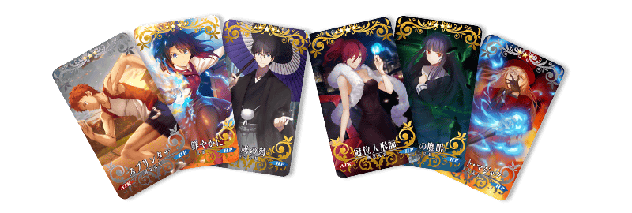
| 稀有度 | 名稱 |
|---|---|
| ★★★★★ | 冠位人形師 |
| ★★★★★ | 老成の翁 |
| ★★★★ | 拳舞は鮮やかに |
| ★★★★ | 歪曲の魔眼 |
| ★★★ | リピート・マジック |
| ★★★ | スプリンター |
◆「魔法少女紀行 ～プリズマ・コーズ～Pick Up召喚」限定概念禮裝◆
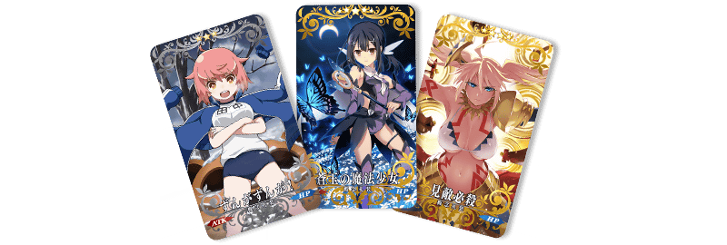
| 稀有度 | 名稱 |
|---|---|
| ★★★★★ | 蒼玉の魔法少女 |
| ★★★★ | 見敵必殺 |
| ★★★ | ずんがずんが！ |
◆2016年「New Year Pick Up召喚」限定概念禮裝◆
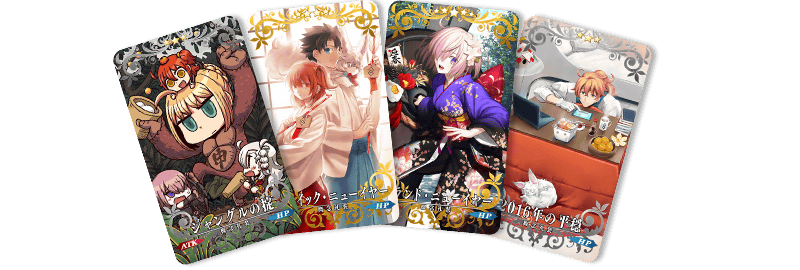
| 稀有度 | 名稱 |
|---|---|
| ★★★★★ | グランド・ニューイヤー |
| ★★★★ | ヒロイック・ニューイヤー |
| ★★★ | 2016年の平穏 |
| ★★★ | ジャングルの掟 |
Pick Up期間中，在迦勒底之門出現宮本武藏體験關卡！
※通過｢特異點F 炎上汙染都市 冬木｣後開放。
迎接｢★5(SSR)宮本武藏｣做為支援成員，挑戰期間限定的關卡！
別錯過體驗Servant技能與寶具的機會！
|
◆舉辦期間◆ ◆關卡通過報酬◆ |
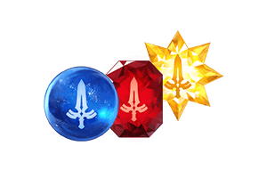 |
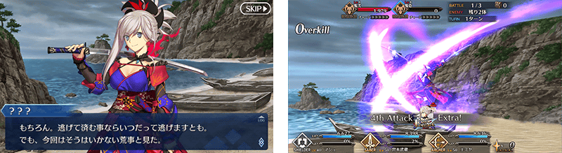
在New Year Pick Up召喚(每日交替)出現的伊斯坎達爾、坂田金時(Berserker)、斯卡哈(Lancer)的幕間物語追加！
◆追加時間◆
2016年12月31日(六) 23:00～
| 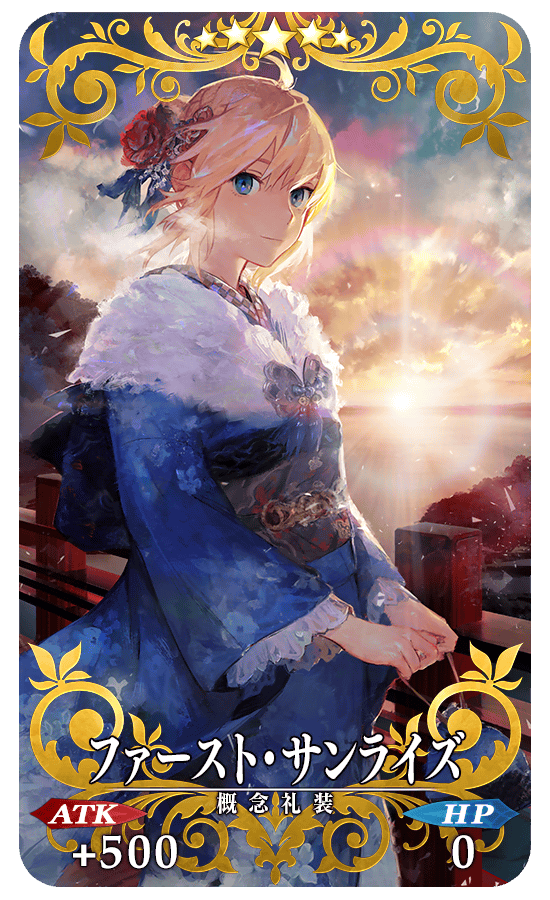 |
★★★★★SSR ファースト・サンライズ ATK 500(最大：2000) HP 0 技能 自身的Buster卡性能提升15%＆NP以40%累積狀態開始戰鬥 |
| 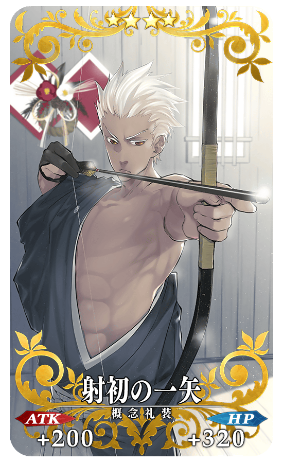 |
★★★★SR 射初の一矢 ATK 200(最大：750) HP 320(最大：1200) 技能 對自身賦予必中狀態＆自身的Arts卡的性能提升8％ |
| 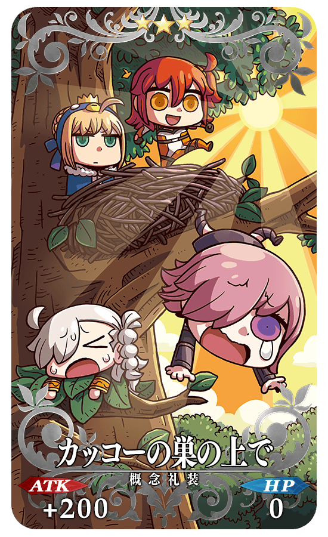 |
★★★R カッコーの巣の上で ATK 200(最大：1000) HP 0 技能 從通過關卡獲得的QP增加2017 |
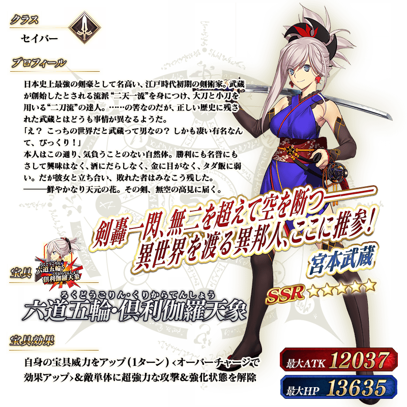
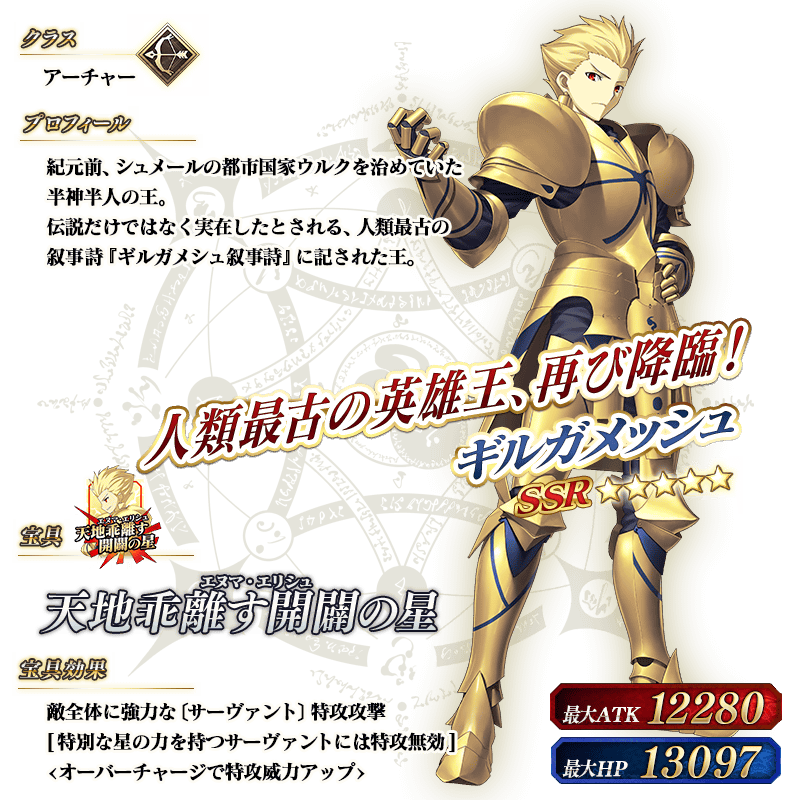
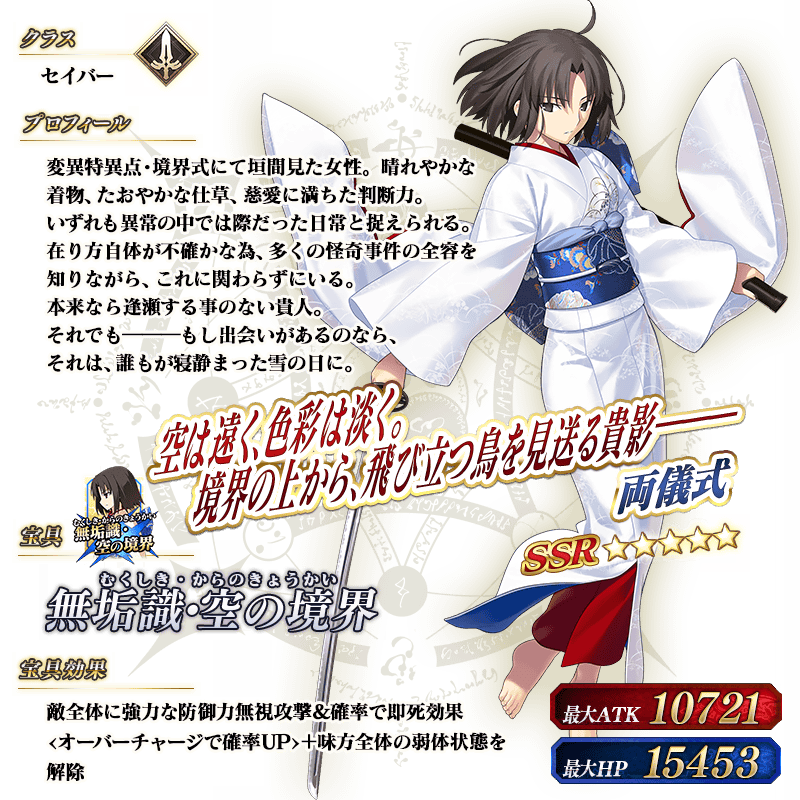
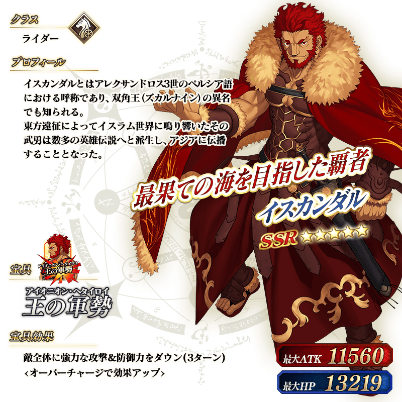
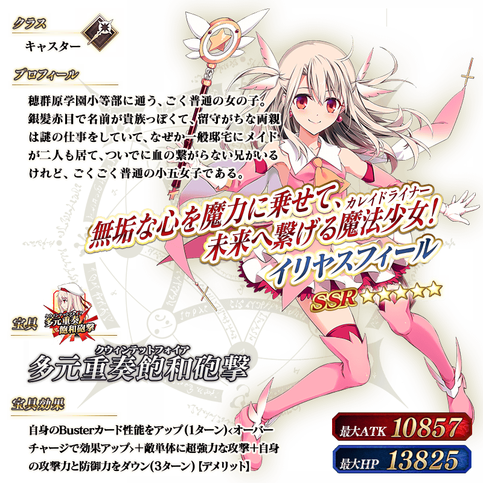
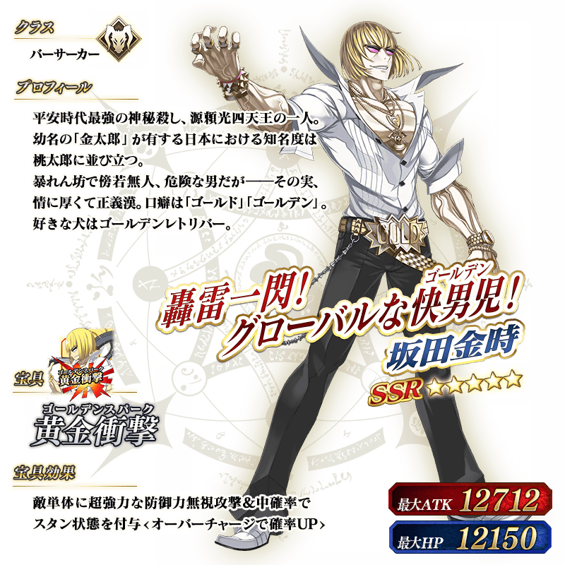
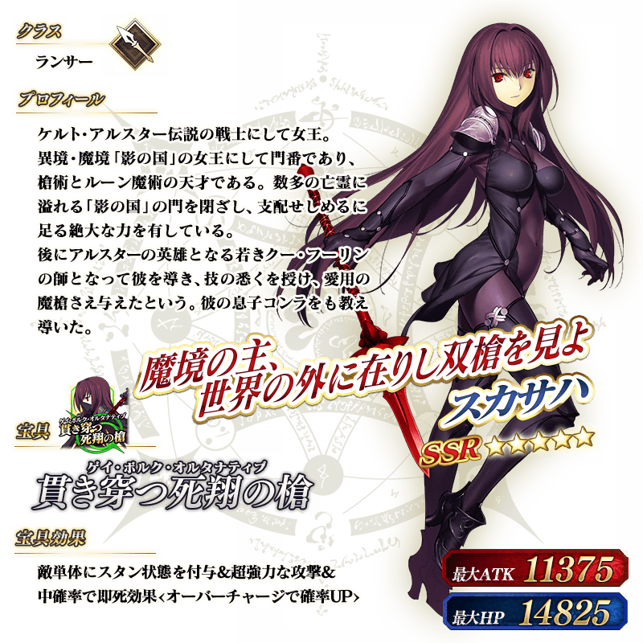
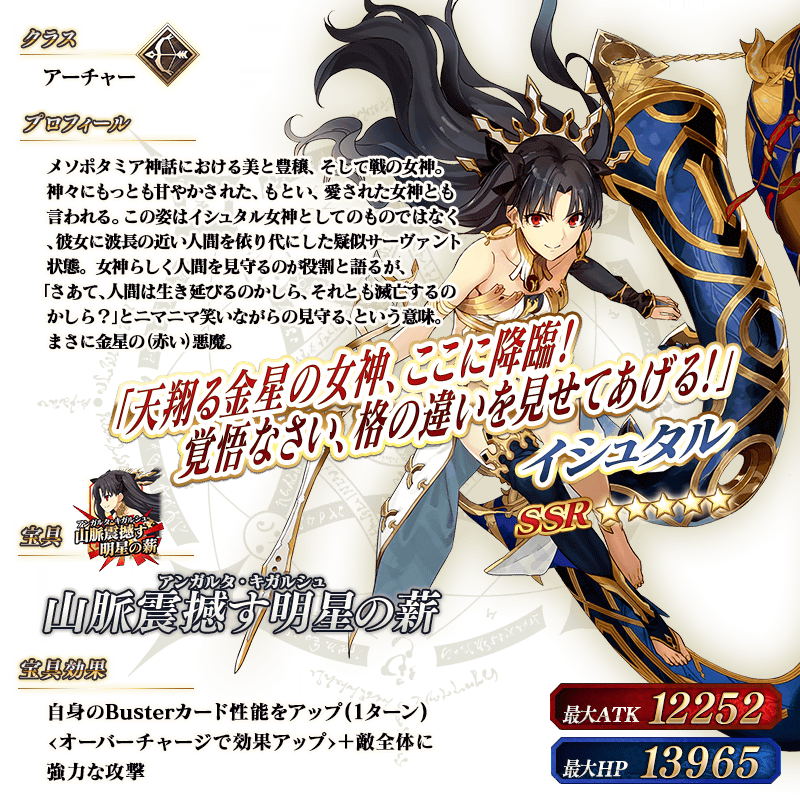